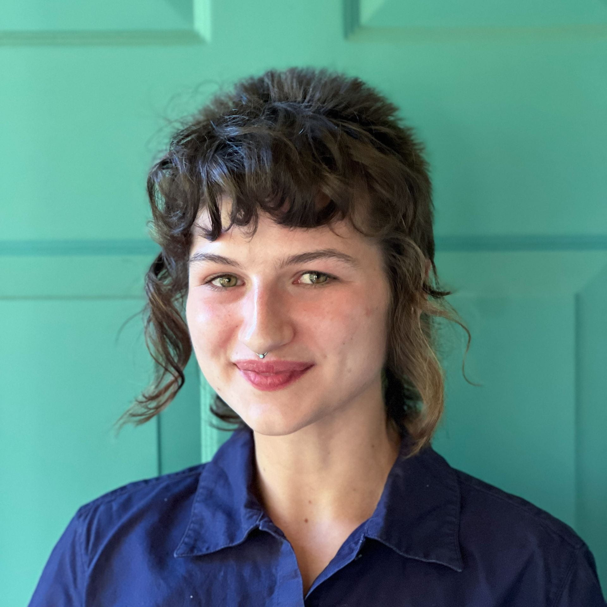

Postdoctoral Fellow
European Bioinformatics Institute &
Wellcome Sanger Institute
rehmann@ebi.ac.uk
I'm a postdoc with the Pathogen Informatics & Modeling Group at EMBL-EBI and the Lawniczak group at Sanger working on modeling Anopheles malaria vectors. I mostly code in Python and am raising a bearded dragon named Aeg (pronounced like what he came out of). When I'm not on the computer, I enjoy making art, going to shows, and being outside.
I'm primarily interested in how geographic patterns of genetic variation can help us understand the evolutionary trajectories of populations, and I have a soft spot for infectious disease (especially vector-borne and zoonotic ones). Right now, I'm working to develop methods that can realistically model how gene drive (modified genes with non-Mendelian inheritance patterns) will spread through Anopheles malaria vectors and suppress population sizes. The goal of these methods is to identify what will maximize the success of gene drive release efforts, and understanding how genetic variation moves through geographically-structured populations is critical for this.
My background is in spatial population genetics, and during my PhD in the Kern Ralph co-lab at the University of Oregon I used simulation-based methods to inform analysis of geographically-structured populations. My research included using machine learning to identify geographic signatures of co-dispersal between vectors and pathogens and developing methods to find selective sweeps using geographic population structure. I think population genetics is super neat and it's important to me to help make the field (and science in general) more inclusive and accessible. During graduate school, I served on the executive boards of UO Women in Graduate Science and GrEBES (the Institute of Ecology & Evolution graduate student group), and I contribute to stdpopsim.